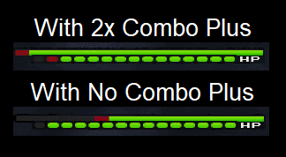

Description: Increases Maximum combo by 1 when on the ground. Equip more to enable more combos.
Many people don't like this ability, because the Boss always seems to break out of their combo before they can use their strong combo-finishers. BUT: If used correctly, Combo Plus is one of the strongest abilities in the game.
Combo Plus raises your hits in a combo by one. This means that you now need to hit 3 times instead of 2 before you can use your combo-finisher. This benefits the "Combo Boost" ability immensely. Combo Boost makes your combo-finishers stronger the more hits you landed during the combo itself. This means that by equipping 2 Combo Plus' you make your finisher even stronger, but you have to hit 2 more hits.
Here is the difference when fighting against Data Roxas with and without Combo Plus' equipped.

You deal (nearly) a whole Health-Bar more damage than without any Combo Plus' equipped. You don't even have to do anything special. Roxas will counterattack you after your combo-finisher (Explosion) automatically, no matter if you have a Combo Plus or not.
This also greatly helps fighting the Lingering Will. The Lingering will takes more damage the more you hit him. He automatically counterattacks after a while and resets this counter though. Equipping Combo Plus makes him more vulnerable in a shorter amount of time, because combo-finishers are slow and add a lot of unnecessary Revenge Value.
The difficulty with this ability is the usage. You have to find out how you can use it effectively without the enemy escaping and counterattacking you during your long combo.
Here are 2 .gif that show the difference perfectly. You deal more damage, and Roxas only counterattacks AFTER your combo both times.